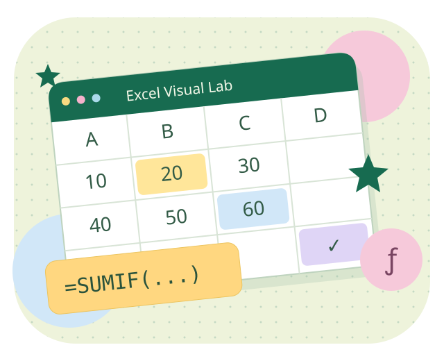
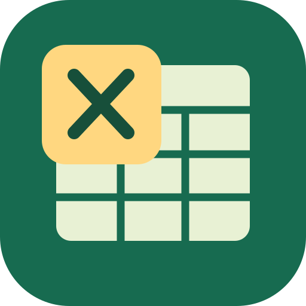

一個公式，一個小發現 ✧YOUR NEXT SMALL WIN
今天想解決什麼？
⌕
換個關鍵字試試
你可以搜尋函數名稱、中文用途，或切換其他分類。
把教室，一起帶走。
開啟過的課程可供離線使用；也能一次下載全部課程。音訊已包含在各課程 HTML 內。

函數遊樂場EXCEL VISUAL LAB
一個公式，一個小發現 ✧YOUR NEXT SMALL WIN
你可以搜尋函數名稱、中文用途，或切換其他分類。
開啟過的課程可供離線使用；也能一次下載全部課程。音訊已包含在各課程 HTML 內。